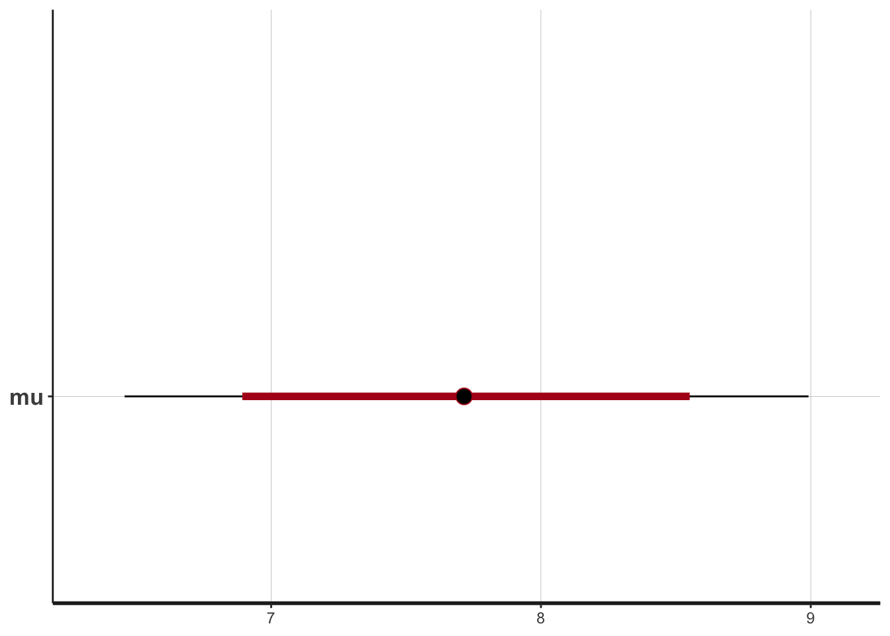
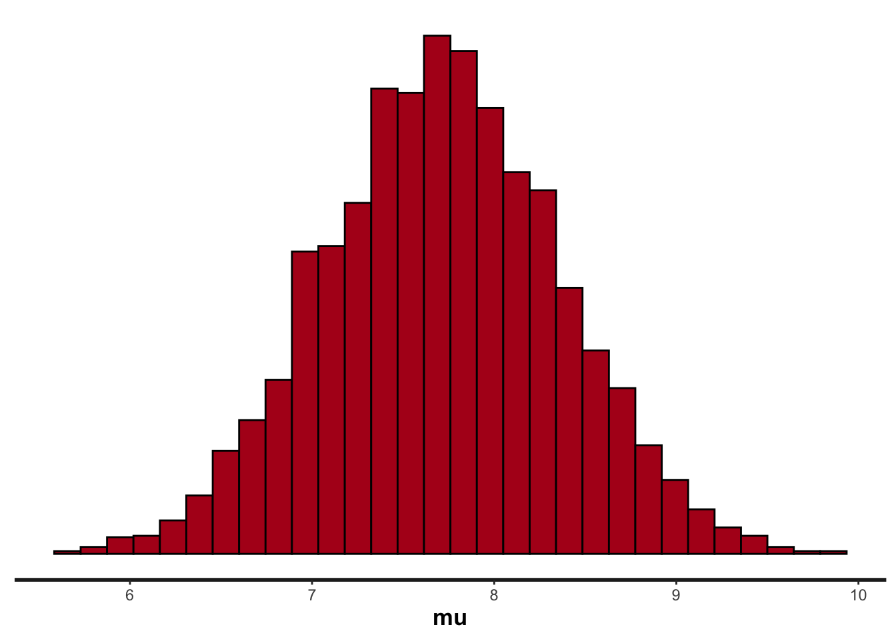
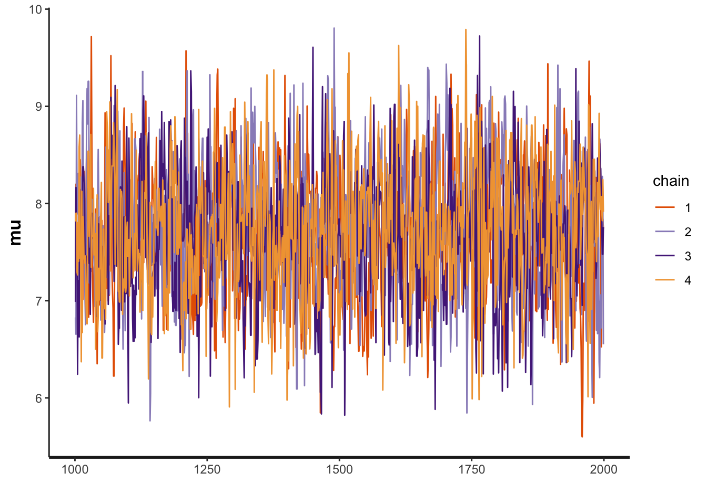

set.seed(3)
n_obs = 15
mu_known = 8.2
sigma_fixed = 2.5
y = rnorm(n_obs, mean = mu_known, sd = sigma_fixed)
hist(y)
Please download and print the lecture materials from Bblearn. After lectures, the recordings will appear in the Bblearn Collaborate Ultra section.
As a reminder, suppose we are estimating a single parameter in a model, \(\theta\). In Bayesian inference, we have:
\[P(\theta | \text{Data}) \propto P(\theta)P(\text{Data}|\theta)\] In words, this means that the posterior probability distribution of the parameter, \(P(\theta | \text{Data})\), is proportional to the prior probability distribution of the parameter, \(P(\theta)\), multiplied by the likelihood of the data, given the parameter, \(P(\text{Data}|\theta)\).
The prior probability distribution of the parameter quantifies what we believe the parameter’s true value may be, prior to collecting data. Remember that this prior probability distribution can be “vague,” meaning that we don’t have high confidence in what the parameter value is prior to collecting data. Or, the prior can be “informative,” meaning that we have some level of certainty in what values are most likely for the parameter.
The likelihood is the same quantity that we discussed in the sections on Maximum Likelihood. The data likelihood represents how well a model matches the data, given a particular parameter value.
Finally, the posterior probability distribution represents a type of weighted likelihood - the likelihood weighted by our prior knowledge of what the parameter value might be.
Here is an example of how we can visualize the relationship between the prior, the likelihood, and the posterior of a parameter. Imagine that we collect a sample of data, \(y\), from the population \(Y\). Our goal is to estimate the mean of that population, \(Y\). Obviously this can be done by calculating the mean outright, but here we want to quantify the posterior probability distribution of the mean, so that we can simultaneously understand the central estimate as well as the uncertainty around that estimate. To do this, we must specify the likelihood of the data. We’ll assume that: \[y_i \sim N(\mu, \sigma)\] We’ll assume we know \(\sigma\) with certainty. Our goal then is to estimate the posterior of \(\mu\), \(P(\mu | y)\).
First we’ll generate data points \(y\) from a “known” distribution.
set.seed(3)
n_obs = 15
mu_known = 8.2
sigma_fixed = 2.5
y = rnorm(n_obs, mean = mu_known, sd = sigma_fixed)
hist(y)
Obviously in this easy example we could calculate a point estimate of the mean of \(Y\) using the mean of sample \(y\):
mean(y)[1] 7.723497But, this estimate leads to no understanding of the certainty in our estimate of the true mean of population \(Y\). Instead, let’s use Bayesian inference. For instance, we know that the true mean of \(Y\) is \(8.2\), which we simulated. So this estimate of \(\mu\) has error, especially because of low sample size.
First, let’s specify a vague prior probability distribution for \(\mu\). We’ll assume: \[\mu \sim N(0, 50)\] We can visualize this prior probability density function.
mu_guess = seq(0, 20, length.out = 200)
# Prior prob distribution
mu_prior = dnorm(mu_guess, 0, 50, log = TRUE)
plot(exp(mu_prior) ~ mu_guess,
type = "l",
xlab = expression(mu),
ylab = expression("P("~mu~")"))
Notice that because we made the prior so “vague”, all of the possible values of \(\mu\) that we plotted (ranging from 0 to 20), all have very low probabilities, because basically all possible values of \(\mu\) (ranging negative to positive infinity) have equally low probability with this vauge prior. I’m exaggerating a little bit to make a point.
Now, we need to create a function to calculate the likelihood of any particular “guess” of \(\mu\).
We’ve seen these sorts of functions before. Now, let’s calculate the likelihood for each of our “guesses” of \(\mu\).
# Store the likelihoods:
mu_lhood = NULL
for(i in 1:length(mu_guess)){
mu_lhood[i] = mu_likelihood(mu_guess[i], y)
}
# Plot on ln scale:
plot(exp(mu_lhood) ~ mu_guess,
type = "l",
xlab = expression(mu),
ylab = expression("P("~y~"|"~mu~")"))
Now we can calculate the posterior as the product of the prior and the likelihood (or the sum of the log-scale values of these distributions).
mu_posterior = mu_prior + mu_lhood
plot(exp(mu_posterior) ~ mu_guess,
type = "l",
xlab = expression(mu),
ylab = expression("P("~mu~"|"~y~")"))
abline(v = mu_known, lty = 1)
abline(v = mean(y), lty = 2)
What we see here is that with the vague prior, the posterior basically reflects the data likelihood. The prior gave no additional information to the analysis.
Now let’s see how the posterior might change with a more informative prior that is actually biased to the incorrect value of \(\mu\), such as \(\mu \sim N(2, 0.75)\).
# Prior prob distribution
mu_prior = dnorm(mu_guess, 2, 0.75, log = TRUE)
plot(exp(mu_prior) ~ mu_guess,
type = "l",
xlab = expression(mu),
ylab = expression("P("~mu~")"))
mu_posterior = mu_prior + mu_lhood
plot(exp(mu_posterior) ~ mu_guess,
type = "l",
xlab = expression(mu),
ylab = expression("P("~mu~"|"~y~")"))
abline(v = mu_known, lty = 1)
abline(v = mean(y), lty = 2)
Now what we see more clearly is that the posterior is the data likelihood weighted by the prior. In this case, because we have very few data points, the posterior is particularly sensitive to the prior of \(\mu\).
In reality, we are estimating more than one parameter in a model. Therefore, estimating the posterior of the model means estimating the joint posterior of the model parameters, so that we can quantify the marginal posterior estimate of each model parameter.
Therefore we use an algorithm to “sample from” the joint posterior. As discussed in lecture, these algorithms typically employ a variant of Monte Carlo sampling (e.g., Markov chain Monte Carlo (MCMC) or Hamiltonian Monte Carlo (HMC)). The statistical programming language Stan uses HMC, and we will employ Stan via the R package rstan. See Footnotes 9.5.1 for a coded Metropolis-Hastings MCMC, which we described in lecture.
Note that because we are using Quarto documents, we need to set up the Stan model in a very particular way, to get it to work with code chunks. Usually, when using a .R file, we create a separate .stan file, and then we run the rstan::stan() function in the .R file, while referencing the .stan file that should be saved in our working directory. Here, we will create and compile the .stan file in one place (in the Quarto document). I will put an example set of .R and .stan files on BBLearn that compliment the following examples.
First, we will load rstan and set some required options.
Loading required package: StanHeadersLoading required package: ggplot2rstan (Version 2.21.8, GitRev: 2e1f913d3ca3)For execution on a local, multicore CPU with excess RAM we recommend calling
options(mc.cores = parallel::detectCores()).
To avoid recompilation of unchanged Stan programs, we recommend calling
rstan_options(auto_write = TRUE)options(mc.cores = parallel::detectCores())
rstan_options(auto_write = TRUE)Next, we will create a .stan model that allows us to estimate the mean only.
// The input data is a vector 'y' of length 'N'.
data {
int<lower=0> N;
vector[N] y;
real<lower=0> sigma_fixed;
}
// The parameters accepted by the model.
parameters {
real mu;
}
// The model to be estimated.
model {
// priors
mu ~ normal(0, 50.0);
// likelihood
y ~ normal(mu, sigma_fixed);
}When the chunk above is run, it compiles the Stan model into C++ code that gets run in the background. Next, we will use R code to set up and run the Stan model to estimate the parameter \(\mu\).
# create a list for stan
mu_fit_data = list(
N = length(y),
y = y,
sigma_fixed = sigma_fixed
)
# Fit the compiled model using stan defaults
fit = sampling(estimate_mu, # this is generated from the previous code-chunk
data = mu_fit_data)
# Summarize the output
print(fit)Inference for Stan model: 191072567d922448f8d714298d1d145a.
4 chains, each with iter=2000; warmup=1000; thin=1;
post-warmup draws per chain=1000, total post-warmup draws=4000.
mean se_mean sd 2.5% 25% 50% 75% 97.5% n_eff Rhat
mu 7.71 0.02 0.64 6.46 7.28 7.72 8.13 8.98 1407 1
lp__ -4.84 0.02 0.68 -6.77 -5.01 -4.57 -4.40 -4.35 1714 1
Samples were drawn using NUTS(diag_e) at Mon May 1 10:26:20 2023.
For each parameter, n_eff is a crude measure of effective sample size,
and Rhat is the potential scale reduction factor on split chains (at
convergence, Rhat=1).This print() format shows us the mean and median (50%) estimates of \(\mu\). The output also shows various levels of the “credible intervals”. For instance, the 2.5% and 97.5% would give us the ends of the “95% credible interval”, whereas the 25% and 75% would give us the ends of the “50% credible interval”.
We can also generate various summary visualizations.
plot(fit)ci_level: 0.8 (80% intervals)outer_level: 0.95 (95% intervals)
plot(fit, show_density = TRUE)ci_level: 0.8 (80% intervals)
outer_level: 0.95 (95% intervals)plot(fit, plotfun = "hist")Warning: The dot-dot notation (`..density..`) was deprecated in ggplot2 3.4.0.
ℹ Please use `after_stat(density)` instead.
ℹ The deprecated feature was likely used in the rstan package.
Please report the issue at <https://github.com/stan-dev/rstan/issues/>.`stat_bin()` using `bins = 30`. Pick better value with `binwidth`.
These three plots summarize the posterior estimate of \(\mu\) in various ways.
Next, we can observe the “traceplot” which shows the outcome of the 4 HMC chains that sample from the posterior.
plot(fit, plotfun = "trace")
We can also show the “warmup” phase, which emphasizes how the initial “proposal” can be far outside of the true posterior.
# Include the warmup phase
plot(fit, plotfun = "trace", inc_warmup = TRUE)Now let’s assume the more likely case in which we do not know the mean nor the standard deviation of the sample, so we need to estimate \(\mu\) and \(\sigma\) of the normal distribution.
// The input data is a vector 'y' of length 'N'.
data {
int<lower=0> N;
vector[N] y;
}
// The parameters accepted by the model.
parameters {
real mu;
real<lower=0> sigma;
}
// The model to be estimated.
model {
// priors
mu ~ normal(0, 50.0);
sigma ~ cauchy(0, 1);
// likelihood
y ~ normal(mu, sigma);
}Notice how now we have two parameters in the parameters code block. We also are specifying two prior distributions, one for \(\mu\) and one for \(\sigma\). We are using the cauchy probability distribution for \(\sigma\), which is useful in part because this distribution ensures that \(\sigma > 0\).
Next, we will use R code to set up and run the Stan model.
# create a list for stan
mu_sigma_fit_data = list(
N = length(y),
y = y
)
# Fit the "model" using stan defaults
fit2 = sampling(estimate_mu_sigma,
data = mu_sigma_fit_data)
# Summarize the output
print(fit2)Inference for Stan model: a0d26ace7e7eb0b5ed98f9c25c9b94f0.
4 chains, each with iter=2000; warmup=1000; thin=1;
post-warmup draws per chain=1000, total post-warmup draws=4000.
mean se_mean sd 2.5% 25% 50% 75% 97.5% n_eff Rhat
mu 7.71 0.01 0.53 6.64 7.38 7.72 8.05 8.77 2508 1
sigma 2.04 0.01 0.41 1.43 1.76 1.98 2.27 3.00 2301 1
lp__ -19.10 0.03 1.03 -21.86 -19.52 -18.81 -18.35 -18.06 1351 1
Samples were drawn using NUTS(diag_e) at Mon May 1 10:26:40 2023.
For each parameter, n_eff is a crude measure of effective sample size,
and Rhat is the potential scale reduction factor on split chains (at
convergence, Rhat=1).Now the print() statement shows the output for both \(\mu\) and \(\sigma\). And we can see that the true values of both parameters lie within the 95% credible interval of the posterior.
We can also generate various summary visualizations.
Below is a coded MH-MCMC algorithm for estimating one parameter. In this case the mean of a normal distribution: \[y \sim N(\theta, \sigma^2)\] Here \(\theta\) is the mean of the normal distribution, which is unknown, but \(\sigma\) is known.
set.seed(10)
# We will estimate true_theta
# Assume:
true_theta = 3.0
sd_known = 2.0
#-----------------------------------
#-----------------------------------
# Test data set
y_test = rnorm(150, true_theta, sd_known)
#-----------------------------------
#-----------------------------------
# SET UP THE MCMC
# Parameters of the normal prior on true_theta
# i.e. true_theta ~ Normal(mu_prior, sd_prior)
mu_prior = 3.0
sd_prior = 5.0
# Same with the proposal distribution
## Notice that the width of the proposal
## is 25% greater than the prior
mu_prop = 3.0
sd_prop = sd_prior * 1.25
# Number of MCMC iterations
n_iter = 15000
# Set up storage (vector)
chosen_theta = vector("numeric", length = n_iter)
for(i in 1:n_iter){
if(i == 1){ # First iteration
# Choose theta from proposal distribution
old_theta = rnorm(1, mu_prop, sd_prop)
}
# Draw new theta from proposal:
new_theta = rnorm(1, mu_prop, sd_prop)
# Calculate proposal adjustment:
old_prop_adj = dnorm(old_theta, mu_prop, sd_prop, log = TRUE)
new_prop_adj = dnorm(new_theta, mu_prop, sd_prop, log = TRUE)
# Calculate prior prob:
old_prior = dnorm(old_theta, mu_prior, sd_prior, log = TRUE)
new_prior = dnorm(new_theta, mu_prior, sd_prior, log = TRUE)
# Calculate data likelihood:
old_lik = sum(dnorm(y_test, old_theta, sd_known, log = TRUE))
new_lik = sum(dnorm(y_test, new_theta, sd_known, log = TRUE))
# Calculate posterior density:
old_post = old_prior + old_lik
new_post = new_prior + new_lik
# Calculate acceptance ratio:
log_ratio = (new_post - new_prop_adj) - (old_post - old_prop_adj)
ratio = exp(log_ratio)
# Make decision:
if(ratio > 1){
# Keep new theta
chosen_theta[i] = new_theta
}else{
rand = runif(1, min = 0, max = 1)
if(ratio <= rand){
# Reject new theta (i.e., keep old_theta)
chosen_theta[i] = old_theta
}else{
chosen_theta[i] = new_theta
}
}
# Update what is "old" value
old_theta = chosen_theta[i]
}
#-----------------------------------
#-----------------------------------
# Plot the trace:
plot(chosen_theta ~ c(1:n_iter), type = "l",
xlab = "Iteration", ylab = expression(theta~"|"~y))
# Plot the histogram:
## Cut out the warmup or "burn-in" phase
n_burn = n_iter / 2
hist(chosen_theta[n_burn:n_iter], breaks = 25)
abline(v = true_theta, lwd = 3)
2.5% 50% 97.5%
2.473926 2.847643 3.144811 sd(chosen_theta[n_burn:n_iter])[1] 0.1565706We can see that the true value of \(\theta\) is within the 95% credible interval of the marginal posterior distribution.